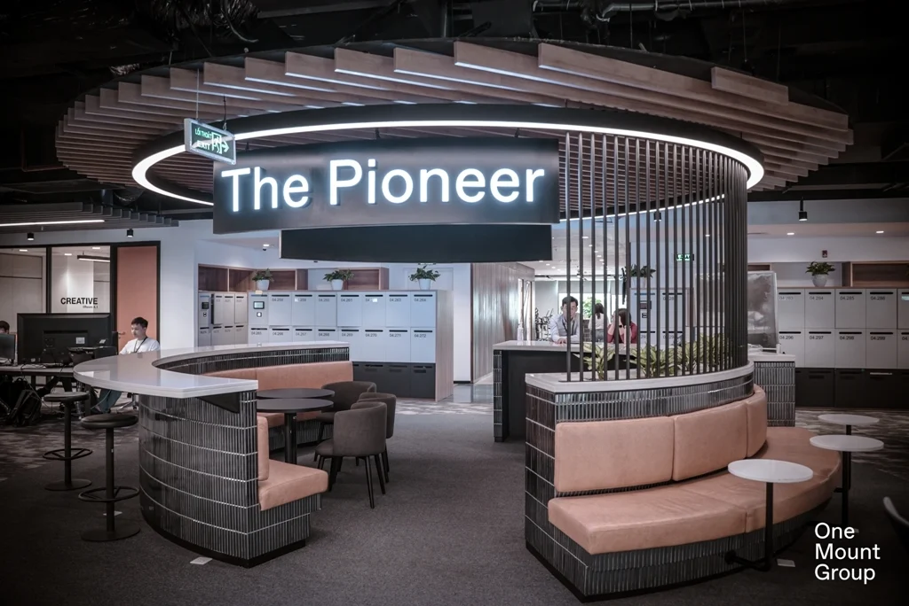

Trang chủ
Vinid Life
Liên hệ

Là một và duy nhất
VinID là một hệ sinh thái số được xây dựng nhằm mục tiêu trở thành một trợ lý đắc lực, một người bạn đồng hành tin cậy cho tất cả mọi người, mọi gia đình và mọi hộ kinh doanh trong cuộc sống.
Với siêu ứng dụng VinID người dùng có thể tích điểm, tiêu điểm trong hệ sinh thái Vingroup; mua hàng tươi sống thông qua tính năng Đi chợ online; ăn uống, mua sắm, nhận hàng tận nhà và tích điểm 7%; hưởng ưu đãi giảm giá mỗi ngày từ các thương hiệu lớn với VinID Voucher hay mua vé các sự kiện thể thao, giải trí nhanh chóng với VinID Ticket.
Bên cạnh đó, tính năng ví điện tử tích hợp ngay trên ứng dụng, liên kết hệ thống 36 ngân hàng giúp người dùng dễ dàng mua sắm, thanh toán nhanh chóng, an toàn và thuận tiện mà không cần tiền mặt.
Với nền tảng công nghệ ưu việt kết hợp năng lực phân tích dữ liệu và thấu thiếu hành vi người dùng, VinID tiếp tục nghiên cứu phát triển các tính năng và hoàn thiện hệ sinh thái số của mình trong tương lại, hướng tới trở thành siêu ứng dụng – một trợ lý thông minh không thể thiếu của người Việt dành cho người Việt
Hà Nội
Văn phòng Hội sở – Tower 2, nằm trong Khu đô thị sinh thái hiện đại bậc nhất Times City. Với tổng diện tích 13.000 m2 bao gồm 5 tầng và 1 hầm, sức chứa ước tính hơn 1500 chỗ ngỗi. Văn phòng được thiết kế đa dạng các khu vực với chức năng chuyên môn hóa như khu vực dành cho đối tác, tiếp khách, khu vực town hall, focus point, collaboration. Đặc biệt các khu vực đặc quyền dành riêng cho VinIDers như phòng gym/yoga, phòng game, phòng y tế, vắt sữa và không gian can-teen hiện đại với sức chứa lên đến 250 VinIDers cùng lúc.
TP.HCM
Với mục tiêu xây dựng một môi trường làm việc hiện đại, linh hoạt cho VinIDers. Ngoài thiết kế đơn giản nhưng đầy đủ tiện nghi, văn phòng 28 Bis Mạc Định Chi, Quận 1 còn cung cấp một môi trường làm việc thoải mái nhất cho nhân viên với các khu vực phòng game, pantry tách rời khu vực làm việc và các hoạt động hỗ trợ chăm sóc sức khỏe nhân viên (massage cổ vai gáy),..
Mọi thứ tạo nên một thiên đường cho VinIDers HCM làm việc và được truyền cảm hứng